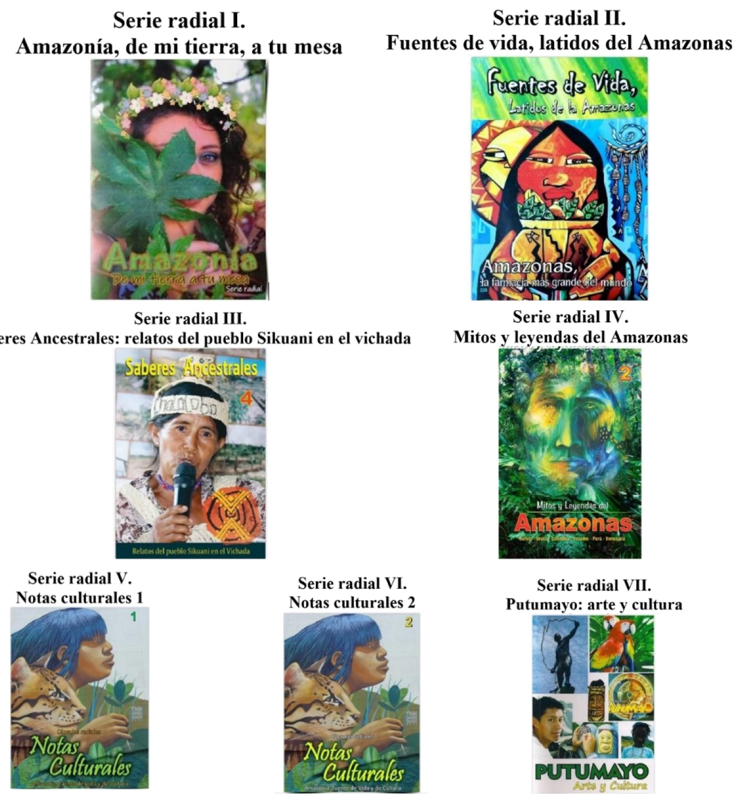

Se analiza el papel crucial de la educomunicación en la protección de la selva amazónica y las culturas indígenas de Colombia, resaltando los desafíos ambientales, socioeconómicos y humanitarios que enfrenta la región debido a la deforestación, la minería ilegal y el conflicto armado. Se destaca la desigualdad estructural que enfrentan las comunidades étnicas, incluidas las poblaciones afrodescendientes e indígenas, y se enfatiza la importancia de las iniciativas comunitarias para contrarrestar estas amenazas. Además, se subraya la necesidad de una representación mediática que refleje la diversidad cultural de estas comunidades. Se concluye instando al desarrollo de estrategias educativas y de comunicación que promuevan la conservación de las lenguas y culturas indígenas, a través de la exaltación de las cosmogonías y saberes de las comunidades nativas, así como una representación mediática más inclusiva y diversa en Colombia.
Artículos en revistas · 2024
Educomunicación para la preservación de la Amazonía. Estudio de caso Grupo Comunicarte, Colombia
Revista Española de Desarrollo y Cooperación, 51(2)
